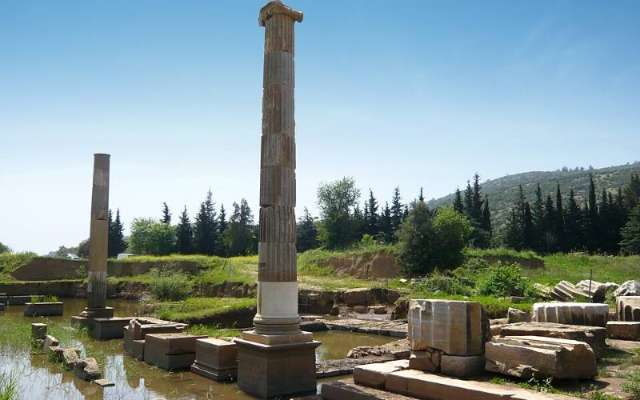
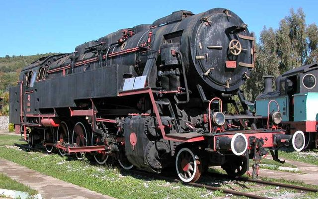

Kültür Varlıkları ガイドにはイズミルの43か所が載っています：20 遺跡, 18 博物館, 4 城・歴史的建造物, 1 宗教建築。以下に注目スポット、地図、全リストを掲載しています。
⭐ 注目スポット

1 · イズミル · 遺跡ベルガマのアクロポリス
ベルガマのアクロポリスは、ヘレニズム時代のペルガモン王国の首都ペルガモンの政治と文化の中心で、平野から数百メートルそびえる険しい丘の上に築かれました。アッタロス朝のもとで街は芸術と学問でアレクサンドリアと競い合い、図書館と羊皮紙で記憶されています。最も印象的なのは斜面に刻まれた劇場で、古代世界で最も急な劇場のひとつです。ローマ時代のトラ…

2 · イズミル · 遺跡エフェソス
エフェソスは古代最大級の港湾都市のひとつで、ローマのアジア属州で最も輝かしい中心地でした。近くには世界七不思議のひとつアルテミス神殿が建っていました。大理石が敷かれたクレテス通りを、泉、神殿、公衆トイレ、商店の前を通って歩くと、日々の暮らしを一歩ずつたどることができます。通りの終わりにあるケルスス図書館の2層のファサードは、最も多く撮影…

3 · イズミル · 遺跡ベルガマ・アスクレピオン遺跡
治癒の神アスクレピオスに捧げられたペルガモンのアスクレピオンは、古代世界で最も有名な治療施設のひとつでした。患者は聖なる泉を使い、入浴、食事療法、音楽、演劇によって治療を受け、夢の解釈は治癒の重要な一部でした。ペルガモン出身の名医ガレノスはこの伝統に学び、ここで働きました。聖なる道、列柱の中庭、小劇場、治療棟へ続く屋根付きの地下通路を見…
🗺 地図
📍 すべてのスポット (43)
遺跡 (20)
ベルガマのアクロポリス遺跡 · UNESCOエフェソス遺跡 · UNESCOベルガマ・アスクレピオン遺跡遺跡 · UNESCO ベルガマ・赤いバシリカ遺跡 · UNESCO
ベルガマ・赤いバシリカ遺跡 · UNESCO アゴラ遺跡（イズミル）遺跡
アゴラ遺跡（イズミル）遺跡 アヤスルク・聖ヨハネ教会遺跡遺跡
アヤスルク・聖ヨハネ教会遺跡遺跡 エフェソス遺跡・テラスハウス遺跡
エフェソス遺跡・テラスハウス遺跡 エリュトライ古代都市遺跡
エリュトライ古代都市遺跡 古スミルナ（バイラクル遺丘）遺跡
古スミルナ（バイラクル遺丘）遺跡 カラベルの岩壁レリーフ遺跡
カラベルの岩壁レリーフ遺跡
クラロス遺跡遺跡 クラゾメナイ遺跡遺跡
クラゾメナイ遺跡遺跡 コロフォン古代都市遺跡
コロフォン古代都市遺跡 キュメ古代都市遺跡
キュメ古代都市遺跡 レベドス古代都市遺跡
レベドス古代都市遺跡 メトロポリス遺跡遺跡
メトロポリス遺跡遺跡 ノティオン古代都市遺跡
ノティオン古代都市遺跡 フォカイア（フォチャ）古代都市遺跡
フォカイア（フォチャ）古代都市遺跡 テオス遺跡遺跡
テオス遺跡遺跡 イェシロヴァ遺丘遺跡
イェシロヴァ遺丘遺跡博物館 (18)
 エフェソス博物館博物館
エフェソス博物館博物館 アフメト・ピリシュティナ市アーカイブと博物館博物館
アフメト・ピリシュティナ市アーカイブと博物館博物館 アルカス・アートセンター博物館
アルカス・アートセンター博物館 ベルガマ博物館博物館
ベルガマ博物館博物館 ビルギ・チャクルアー邸博物館
ビルギ・チャクルアー邸博物館 ボスタンル野外考古学博物館博物館
ボスタンル野外考古学博物館博物館 キー・ミュージアム（クラシックカー博物館）博物館
キー・ミュージアム（クラシックカー博物館）博物館 ラティフェ・ハヌム邸記念館博物館
ラティフェ・ハヌム邸記念館博物館 ティレ博物館博物館
ティレ博物館博物館
チャムルク蒸気機関車博物館博物館 チェシメ博物館博物館
チェシメ博物館博物館 イズミル考古学博物館博物館
イズミル考古学博物館博物館 イズミル・アタテュルク博物館博物館
イズミル・アタテュルク博物館博物館 イズミル文化芸術工場博物館
イズミル文化芸術工場博物館 イズミル国立絵画彫刻博物館博物館エフェソス体験博物館博物館エーゲ大学自然史博物館博物館ウデミシュ博物館博物館
イズミル国立絵画彫刻博物館博物館エフェソス体験博物館博物館エーゲ大学自然史博物館博物館ウデミシュ博物館博物館